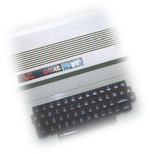

Nostalgia Network
My
first ever computer was a Dragon 32. This machine was only ever
capable of the most simple tasks, but had the unforgettable
piece of equipment known as the tape drive. The tape drive allows
data to be stored on the same magnetic tapes used to record
audio for playback on a hifi. And every time a Dragon 32 program
was loaded, you would hear the data being played to the machine.
Thinking back to the sounds of the data screeching
its way back from an audio signal to raw data, it must have
been some kind of music. The sounds stored on the tape were
a direct representation of the creativity of the programmer.
These sounds were then played back as though they were a song,
instructing the machine of what tasks to perform. Not only this,
they were also 'catchy'. I can still remember and recite the
first 5 seconds of the music I played to my Spectrum.
The idea of not only using the same audio
frequencies as are audible to the human ear, but to also use
a medium more frequently associated with music, is one of my
earliest experiences of an integration between the digital virtual
and the human real.
As computers grew up and technology became
cheaper, the audio tape was lost for the faster, more reliable
and greater capacity floppy disk. Lost were the sounds of a
Spectrum's music as the data began silently transferring its
way from storage to machine.
The Nostalgia Network is an attempt to give
back to computers the ability to communicate in the same communication
space used by humans. The Nostalgia Network allows 2 machines
to send and receive data across the airwaves by creating and
listening to music. Sound is played through speakers and picked
up by microphone in the same way we talk using our vocal chords
and listen with our ears.
To find out my solution to the task, read
the Application page.
|